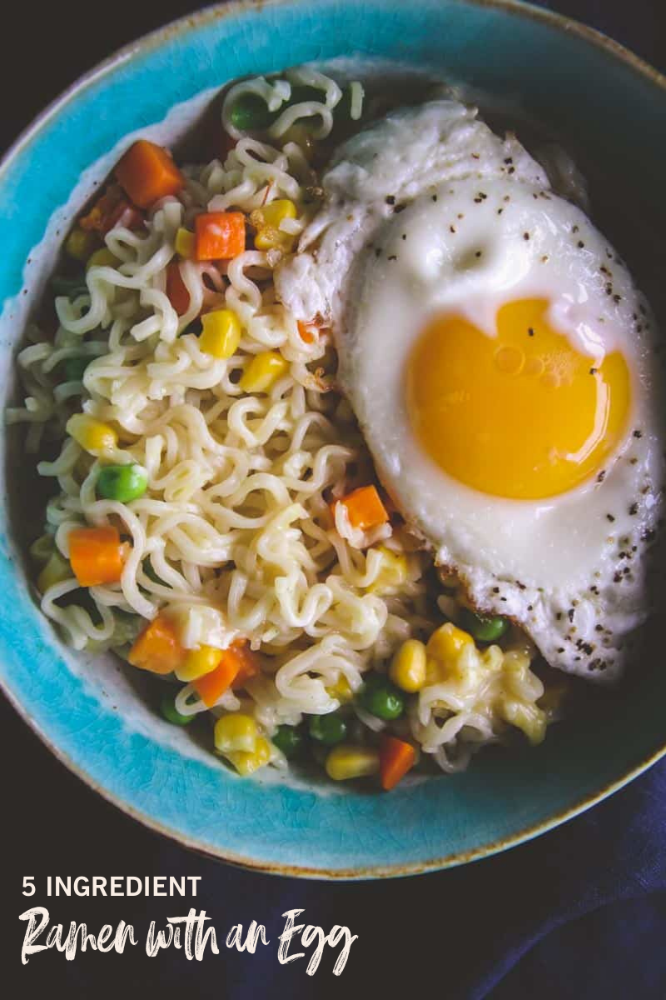

OUR RECIPES FOR TODAY WILL BE :
- Ramen with an Egg
- Chicken Ramen Recipe
- Beef Ramen Recipe
- Shrimp Ramen Recipe

first recipe Ramen with an Egg

On late nights and busy days, sometimes an easy dinner is exactly what I need! Not only is this ramen with an egg incredibly easy, but it is also so quick to make. Bonus!
What recipes do you need to make Ramen with an egg?
- Package of Ramen. I use the chicken flavor, but you can certainly pick your favorite flavor.
- Frozen mixed vegetables
- Butter
- Shredded parmesan cheese
- Egg
How to make ramen noodles with egg:
- Fill a small sauce pot halfway up with water and bring to a boil.
- Remove seasoning packet from ramen and set aside. Add dry ramen noodles and frozen vegetables to the boiling water. Allow to boil for 5 minutes.
- Drain water from the noodles and vegetables. Return to the sauce pan. Sprinkle contents of the seasoning packet over the noodles and vegetables. Add in half of the butter and all of the shredded parmesan cheese. Stir until well combined and the butter has melted.
- While the noodles and vegetables are boiling, melt the other half of the butter in a small frying pan and crack in the egg. Sprinkle with a pinch of salt and pepper.
- cook on high for 1 minute and then reduce heat to medium and cook for 4 minutes (this is for a sunny side up egg. If you like your eggs cooked longer, feel free!)
- to serve, add noodles and vegetables to a large bowl and top with the egg. Enjoy!
and now lets move to our second recipe
chicken ramen